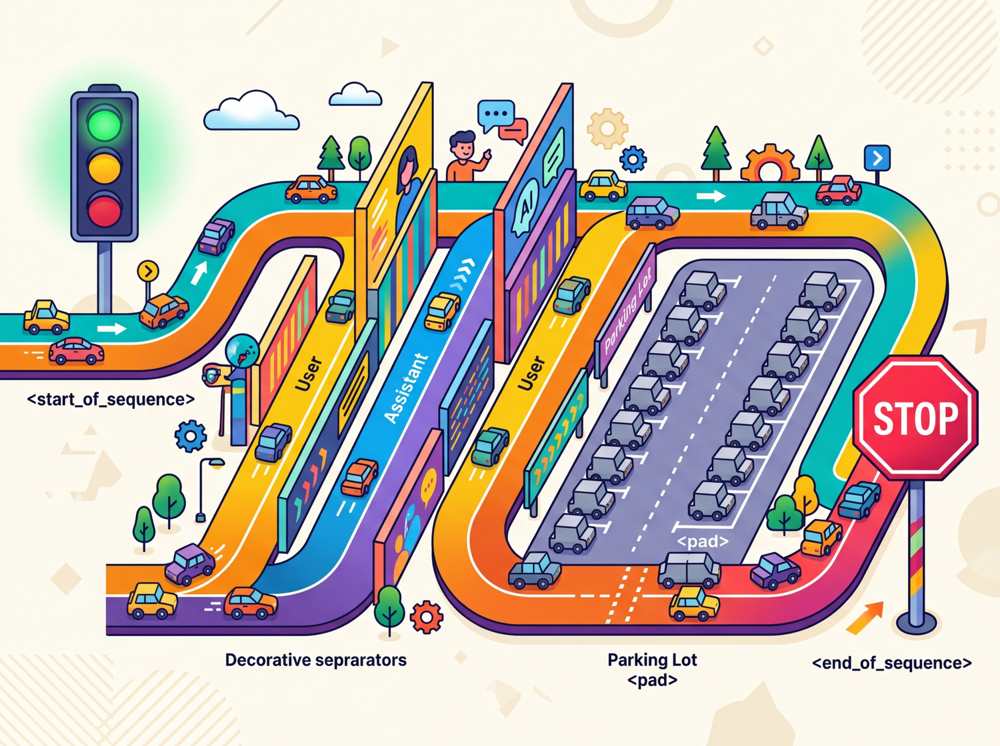

Prerequisites
This section assumes you understand BPE and other subword algorithms from Section 2.2 and the tokenization fundamentals from Section 2.1. Familiarity with how LLMs are accessed through APIs (Section 9.1) is helpful for the cost estimation discussion, though you can read it independently.
This section covers five practical topics that connect tokenization theory to real-world usage: special tokens, chat templates, multilingual fertility, multimodal tokenization, and API cost estimation.
Special Tokens

Beyond the subword vocabulary, every tokenizer includes a set of special tokens that serve structural purposes. These tokens are never produced by the subword algorithm itself; they are manually added to the vocabulary and carry specific meanings that the model learns during training. Understanding special tokens is essential for correctly formatting inputs and interpreting outputs.
Common Special Tokens
| Token | Typical Symbol | Purpose |
|---|---|---|
| Beginning of Sequence | <s>, [CLS], <|begin_of_text|> |
Marks the start of input; signals the model to begin processing |
| End of Sequence | </s>, [SEP], <|end_of_text|> |
Marks the end of input or a boundary between segments |
| Padding | [PAD], <pad> |
Fills sequences to uniform length in batches; attention masks ignore these |
| Unknown | [UNK], <unk> |
Placeholder for tokens not in vocabulary (rare with subword tokenizers) |
| Mask | [MASK] |
Used in masked language modeling (BERT-style); replaced during pretraining |
| Role markers | <|system|>, <|user|>, <|assistant|> |
Delineate speaker roles in chat-format models |
As you can see, the same concept (marking sequence boundaries) appears under many different names across different model families.
There is no universal standard for special token names or IDs. BERT uses
[CLS] and [SEP]. Llama uses <s> and
</s>. GPT-4 uses <|endoftext|>. When working
with a new model, always check its tokenizer configuration to learn which special
tokens it expects and what IDs they map to. In Hugging Face, you can check the model
card or use tokenizer.name_or_path to identify which tokenizer is active.
Chat Templates
Modern LLMs that support conversation (ChatGPT, Claude, Llama Chat, Mistral Instruct) use a chat template that wraps user messages, system prompts, and assistant responses in a specific format using special tokens. The model was trained to expect this exact format, and deviating from it can degrade performance or cause unexpected behavior. We explore how to use these templates effectively through LLM APIs (Section 9.1) and prompt engineering (Chapter 10).
Example: ChatML Format
The ChatML format (used by some OpenAI models) wraps each message with role tags: Code Fragment 1 below puts this into practice.
# ChatML template structure template = """<|im_start|>system You are a helpful assistant.<|im_end|> <|im_start|>user What is tokenization?<|im_end|> <|im_start|>assistant """ # The model generates its response here, ending with <|im_end|> print(template)
Example: Llama 3 Chat Format
# Llama 3 chat template
template = """<|begin_of_text|><|start_header_id|>system<|end_header_id|>
You are a helpful assistant.<|eot_id|><|start_header_id|>user<|end_header_id|>
What is tokenization?<|eot_id|><|start_header_id|>assistant<|end_header_id|>
"""
Notice that the special tokens differ between models, and the exact placement of
newlines matters. The Hugging Face transformers library provides a
apply_chat_template() method that handles this formatting automatically:
Code Fragment 3 below puts this into practice.
# Using Hugging Face chat templates from transformers import AutoTokenizer # Load tokenizer with vocabulary matching the model tokenizer = AutoTokenizer.from_pretrained("meta-llama/Llama-3.1-8B-Instruct") messages = [ {"role": "system", "content": "You are a helpful assistant."}, {"role": "user", "content": "What is tokenization?"}, ] formatted = tokenizer.apply_chat_template( messages, tokenize=False, # return string, not token IDs add_generation_prompt=True # add the assistant header ) print(formatted)
Manually constructing chat prompts by guessing the format is a common source of bugs.
If the model expects <|im_start|> and you provide
[INST], the model will treat your role markers as ordinary text
rather than structural delimiters. Always use the tokenizer's built-in
apply_chat_template() or consult the model's documentation.
The Tiktoken Library
tiktoken is OpenAI's open-source tokenizer library, written in Rust with Python bindings for performance. It implements the BPE tokenizers used by GPT-3.5, GPT-4, GPT-4o, and related models. For any application that interacts with OpenAI's APIs, tiktoken is the authoritative tool for counting tokens, estimating costs, and debugging tokenization behavior. It is also widely used as a general-purpose BPE tokenizer for non-OpenAI workflows because of its speed and simplicity.
Code Fragment 4 below puts this into practice.
Installation and Basic Usage
# Install tiktoken # pip install tiktoken import tiktoken # Load by model name (recommended) enc = tiktoken.encoding_for_model("gpt-4o") # Or load by encoding name directly enc_cl100k = tiktoken.get_encoding("cl100k_base") # GPT-4, GPT-3.5 enc_o200k = tiktoken.get_encoding("o200k_base") # GPT-4o # Encode text to token IDs text = "Tokenizers split text into subword units." tokens = enc.encode(text) print(f"Text: {text}") print(f"Token IDs: {tokens}") print(f"Token count: {len(tokens)}") # Decode token IDs back to text decoded = enc.decode(tokens) print(f"Decoded: {decoded}") # Inspect individual tokens for token_id in tokens: token_bytes = enc.decode_single_token_raw(token_id) print(f" {token_id:6d} -> {token_bytes}")
Two key details deserve attention. First, tiktoken is significantly faster than pure Python tokenizers because the core BPE algorithm runs in Rust. Tokenizing a million characters takes roughly 100ms with tiktoken versus 2 to 5 seconds with a pure Python implementation. This matters for batch processing and real-time cost estimation. Second, different OpenAI models use different encoding schemes: cl100k_base (100,256 token vocabulary) for GPT-4 and GPT-3.5, and o200k_base (200,019 token vocabulary) for GPT-4o. Always match the encoding to the model you are calling, or use encoding_for_model() to let tiktoken select automatically.
Tiktoken only implements OpenAI's BPE tokenizers. For other model families (Llama, Mistral, Gemma), use the Hugging Face transformers library: AutoTokenizer.from_pretrained("model-name"). The tokenizers library by Hugging Face also provides fast Rust-backed tokenization for SentencePiece and other algorithms. When comparing token counts across providers, always use each provider's own tokenizer.
Multilingual Fertility Analysis
A sentence in English might take 10 tokens, but the same sentence in Burmese or Tamil could take 40 or more. This means speakers of underrepresented languages effectively get a smaller context window and pay more per API call for the same amount of meaning. Tokenizer equity is a real and active research problem.
Fertility is the average number of tokens a tokenizer produces per word (or per character, or per semantic unit) in a given language. It directly measures how efficiently a tokenizer represents that language. A fertility of 1.0 means every word maps to a single token; higher values indicate less efficient encoding.
Lab: Comparing Tokenizer Fertility Across Languages
In this lab, we compare the fertility of three different tokenizers on the same set of parallel sentences across multiple languages. This reveals how tokenizer design decisions affect different language communities. Code Fragment 5 below puts this into practice.
# Lab: Multilingual fertility comparison import tiktoken from transformers import AutoTokenizer # Load tokenizers gpt4_enc = tiktoken.encoding_for_model("gpt-4") llama3_tok = AutoTokenizer.from_pretrained("meta-llama/Llama-3.1-8B") bert_tok = AutoTokenizer.from_pretrained("bert-base-multilingual-cased") # Parallel sentences (same meaning, different languages) sentences = { "English": "The quick brown fox jumps over the lazy dog.", "French": "Le rapide renard brun saute par-dessus le chien paresseux.", "German": "Der schnelle braune Fuchs springt über den faulen Hund.", "Chinese": "敏捷的棕色狐狸跳过懒惰的狗。", "Arabic": "الثعلب البني السريع يقفز فوق الكلب الكسول.", "Korean": "빠른 갈색 여우가 게으른 개를 뛰어넘는다.", } print(f"{'Language':<12} {'GPT-4':>8} {'Llama3':>8} {'mBERT':>8}") print("-" * 40) for lang, text in sentences.items(): n_gpt4 = len(gpt4_enc.encode(text)) n_llama = len(llama3_tok.encode(text)) n_bert = len(bert_tok.encode(text)) print(f"{lang:<12} {n_gpt4:>8} {n_llama:>8} {n_bert:>8}")
Several patterns emerge from this comparison:
- English is consistently the most efficient across all tokenizers, reflecting its dominance in training corpora.
- GPT-4 and Llama 3 are fairly similar because both use byte-level BPE trained on large multilingual corpora. Llama 3's tokenizer has a larger vocabulary (128K vs. ~100K), which helps with some languages.
- Multilingual BERT (mBERT) is notably worse for non-Latin scripts, especially Korean and Arabic. Its vocabulary of 30,000 WordPiece tokens must cover over 100 languages, leaving fewer tokens per language.
- CJK and Arabic scripts show the largest efficiency gaps, because their characters are encoded as multi-byte UTF-8 sequences and are less represented in training data.
Tokenizer fertility is a fairness issue. Users of languages that tokenize inefficiently pay more per API call, get less context per request, and experience slower inference. Building on the BPE and Unigram algorithms from Section 2.2, fertility differences arise directly from how training corpora shape the merge rules. The research community is increasingly recognizing this, and newer models allocate more vocabulary space to non-English languages. Llama 3's expanded vocabulary (128K tokens) and GPT-4o's rebalanced training data represent steps toward more equitable tokenization.
Chat Template Mismatch Causes Silent Quality Degradation
Who: A backend engineer integrating a fine-tuned Llama 3 model into a customer support chatbot.
Situation: The team had fine-tuned Llama 3 on their support ticket data and deployed it behind a REST API. Initial demo results were impressive, but production quality was noticeably worse.
Problem: The model frequently ignored the system prompt, gave generic responses, and sometimes produced garbled output with fragments of template markup visible in replies.
Dilemma: The team suspected the fine-tuning data was insufficient and considered collecting more training data (expensive, time-consuming) or switching to a larger model (higher inference cost).
Decision: Before investing in either option, a team member compared the production prompt format against the model's expected chat template. They discovered the API layer was using ChatML-style tags (<|im_start|>) while Llama 3 expected its own format with <|begin_of_text|> and role-specific header tokens.
How: They replaced their manual template construction with the tokenizer's built-in apply_chat_template() method, which automatically formatted messages in the correct Llama 3 style.
Result: Response quality returned to fine-tuning evaluation levels immediately. Customer satisfaction scores improved by 31% within one week. Zero additional training data or model changes were needed.
Lesson: Always use the official chat template. A mismatched template is the most common and most easily fixable cause of degraded LLM performance in production.
Multimodal Tokenization
So far, we have examined how text tokenization varies across languages. But modern models must also tokenize non-text inputs. As LLMs evolve into multimodal models that process images, audio, and video alongside text, tokenization extends beyond text. The core idea remains the same: convert continuous input into discrete tokens that a transformer can process.
Image Tokenization
Vision transformers (ViT) divide an image into fixed-size patches (typically 16x16 or 14x14 pixels), flatten each patch into a vector, and project it into the model's embedding space. Each patch becomes one "token." A 224x224 image with 16x16 patches produces 196 image tokens. Higher-resolution images or smaller patches produce more tokens, consuming more of the context window.
Audio Tokenization
Audio models like Whisper convert speech to spectrograms, then divide them into overlapping frames. Each frame is projected into the token embedding space. A 30-second audio clip typically produces 1,500 tokens (at 50 tokens per second). Discrete audio codec (compression/decompression) models like EnCodec (used by Meta's AudioCraft) quantize audio into discrete codes from a learned codebook, producing token-like representations that can be processed by transformers.
API Cost Estimation
For production applications, estimating token-based costs accurately can save thousands of dollars per month. Here is a practical workflow for cost estimation: Code Fragment 6 below puts this into practice.
# API cost estimation utility import tiktoken def estimate_cost( text: str, model: str = "gpt-4", input_cost_per_1k: float = 0.01, output_cost_per_1k: float = 0.03, estimated_output_ratio: float = 1.5, ): """Estimate API cost for a single request. Note: Pricing is shown per 1K tokens for readability. Real APIs typically quote prices per million tokens. Args: text: The input prompt text. model: Model name for tokenizer selection. input_cost_per_1k: Cost per 1,000 input tokens. output_cost_per_1k: Cost per 1,000 output tokens. estimated_output_ratio: Expected output tokens as a multiple of input tokens. Returns: dict with token counts and cost estimates. """ enc = tiktoken.encoding_for_model(model) input_tokens = len(enc.encode(text)) est_output_tokens = int(input_tokens * estimated_output_ratio) input_cost = (input_tokens / 1000) * input_cost_per_1k output_cost = (est_output_tokens / 1000) * output_cost_per_1k total_cost = input_cost + output_cost return { "input_tokens": input_tokens, "est_output_tokens": est_output_tokens, "input_cost": f"${input_cost:.4f}", "output_cost": f"${output_cost:.4f}", "total_cost": f"${total_cost:.4f}", "monthly_cost_at_1k_req_per_day": f"${total_cost * 1000 * 30:.2f}", } # Example: estimate cost for a RAG prompt prompt = """You are a helpful assistant. Use the following context to answer. Context: [imagine 500 words of retrieved document text here] Question: What are the key benefits of subword tokenization? Answer:""" result = estimate_cost(prompt, model="gpt-4") for key, val in result.items(): print(f" {key}: {val}")
Most API providers charge 2x to 4x more for output tokens than input tokens. This
means that controlling the length of model responses (via system prompts or
max_tokens parameters) has an outsized impact on cost. A response
that is twice as long costs not just twice as much, but potentially three to four
times as much when you account for the output multiplier.
Cost Reduction Strategies
- Prompt compression: Remove unnecessary whitespace, shorten system prompts, and use abbreviations in few-shot examples. Each token you save on input reduces cost directly.
-
Output length control: Set
max_tokensto the minimum needed for your task. Use structured output (JSON) to avoid verbose prose. - Caching: Cache responses for repeated queries. Many frameworks (Langchain, Semantic Kernel) support LLM response caching.
- Model tiering: Use a smaller, cheaper model for simple tasks and reserve the large model for complex ones. A router model can classify requests.
- Batch processing: Some providers offer batch APIs at 50% discount for non-real-time workloads.
Token-Aware Prompt Engineering Cuts API Costs by 40%
Who: A data science team at a legal tech company using GPT-4 for contract analysis.
Situation: The team was processing 2,000 contracts per day through GPT-4, extracting key clauses and generating summaries. Their monthly API bill had grown to $18,000.
Problem: Each contract was sent as a single prompt with a verbose system instruction, full contract text, and a request for detailed analysis. Average input length was 6,200 tokens, with outputs averaging 1,800 tokens.
Dilemma: They could switch to a cheaper model (risking accuracy on complex legal language), reduce the number of contracts processed (losing coverage), or optimize their token usage (requiring engineering effort).
Decision: They chose token-aware optimization: compress prompts, chunk long contracts, and use structured JSON output to constrain response length.
How: They used tiktoken to audit every prompt. They shortened the system prompt from 340 tokens to 85 tokens, split contracts into clause-level chunks (averaging 800 tokens each) processed in parallel, and switched to JSON output mode which reduced output tokens by 55%. They also added a caching layer for identical clause patterns.
Result: Average input tokens dropped from 6,200 to 1,400 per request. Output tokens dropped from 1,800 to 810. Monthly API costs fell to $10,800 (40% reduction) while processing speed improved due to shorter prompts and parallel chunking.
Lesson: Counting tokens before optimizing prompts is like weighing ingredients before cooking. You cannot reduce what you do not measure.
Lab: Comparing Tokenizers Head-to-Head
In this hands-on exercise, we load tokenizers from several popular models and compare their behavior on identical inputs. This reveals differences in vocabulary size, token boundaries, and handling of edge cases. Code Fragment 7 below puts this into practice.
# Lab: Head-to-head tokenizer comparison from transformers import AutoTokenizer # Load tokenizers from different model families tokenizers = { "BERT": AutoTokenizer.from_pretrained("bert-base-uncased"), "GPT-2": AutoTokenizer.from_pretrained("gpt2"), "Llama-3": AutoTokenizer.from_pretrained("meta-llama/Llama-3.1-8B"), "T5": AutoTokenizer.from_pretrained("google-t5/t5-base"), } # Print vocabulary sizes print("Vocabulary sizes:") for name, tok in tokenizers.items(): print(f" {name:10s}: {tok.vocab_size:,} tokens") # Compare tokenization of a tricky input test_input = "GPT-4o costs $0.01/1K tokens. That's 10x cheaper!" print(f"\nInput: {test_input}\n") for name, tok in tokenizers.items(): ids = tok.encode(test_input) tokens = tok.convert_ids_to_tokens(ids) print(f"{name:10s} ({len(ids):2d} tokens): {tokens}")
Key observations from this comparison:
- BERT lowercases everything (since we used
bert-base-uncased) and adds[CLS]/[SEP]special tokens automatically. - GPT-2 and Llama-3 preserve case and attach leading spaces to tokens (notice
" costs"with a space). - Llama-3 produces the fewest tokens, reflecting its larger vocabulary (128K vs. 50K or 30K).
- T5 uses SentencePiece (Unigram) and handles subwords differently, splitting "costs" into "cost" + "s".
- Punctuation and special characters ($, /, !) are handled differently by each tokenizer.
Check Your Understanding
<|im_start|>) instead of Llama's own special tokens?Reveal Answer
Reveal Answer
Reveal Answer
Reveal Answer
Reveal Answer
Key Takeaways
- Special tokens are manually added vocabulary entries that serve structural purposes (sequence boundaries, role markers, padding, masking). They differ across models and must be used correctly for proper model behavior.
-
Chat templates wrap conversations in model-specific formats using special
tokens. Always use the official template (via
apply_chat_template()or provider documentation) rather than guessing the format. - Multilingual fertility measures how efficiently a tokenizer encodes different languages. Languages underrepresented in training data produce more tokens per word, leading to higher costs, smaller effective context windows, and potentially lower model quality.
- Multimodal tokenization extends discrete tokenization to images (patch embedding), audio (frame projection), and other modalities. A single image can consume hundreds or thousands of tokens.
- API cost is driven by token count, and output tokens typically cost 2x to 4x more than input tokens. Controlling output length has the largest impact on cost.
- Always test your tokenizer on representative data before deployment. Vocabulary size, split behavior, and special token handling vary significantly across model families.
You now know how text becomes token IDs. In Chapter 03, you will learn how those token sequences are processed: first by recurrent neural networks that read one token at a time, then by the attention mechanism that lets the model look at all tokens simultaneously.